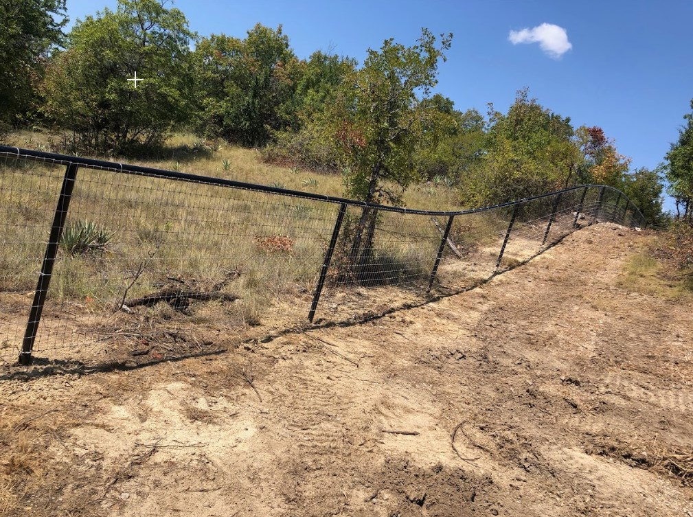

Ranch Fencing
Practical fence systems for ranches, livestock, pasture separation, and working land.
Fence Contractor Muenster TX
Leatherneck Welding builds ranch fencing, pipe fencing, custom gates, and perimeter fencing for Muenster landowners, ranches, homes, and agricultural properties.

Muenster properties often need fencing that is built for land, livestock, equipment access, long fence runs, and daily ranch use. A good fence needs to look clean, but it also needs to hold up.
Whether you need a pipe fence along the road, a ranch entrance gate, livestock fencing, or repairs to an existing fence line, Leatherneck Welding builds practical fence systems designed for North Texas conditions.
We serve Muenster, Gainesville, Lindsay, Myra, Saint Jo, Valley View, Whitesboro, and surrounding North Texas communities.
We regularly review projects outside these areas.Practical fence systems for ranches, livestock, pasture separation, and working land.
Heavy-duty pipe fencing for entrances, road frontage, acreage, and long-lasting boundary lines.
Driveway gates, cattle gates, access gates, and ranch entry gates built to fit the property.
Durable fencing for homes, shops, barns, equipment areas, and rural properties.
Repairs for damaged posts, sagging gates, broken braces, corners, and worn fence sections.
Gate reinforcements, braces, welded repairs, and upgrades for existing fence systems.
We focus on strong, clean fence work that fits the property. For ranch and acreage fencing, the details matter: straight lines, solid posts, strong braces, and gates that work correctly.
Project photos will be added here as Muenster-area fence projects are completed.


Yes. Leatherneck Welding builds ranch fencing for livestock, acreage, pasture separation, entrances, and rural properties in and around Muenster.
Yes. We build pipe fencing for road frontage, ranch entrances, perimeter lines, acreage, and working properties.
Yes. We build custom ranch gates, driveway gates, access gates, cattle gates, and gate upgrades designed to match your fence line.
Yes. We serve surrounding North Texas communities and regularly review projects outside the listed service areas.
Send us your rough layout, photos, or project details and we’ll help you get started.